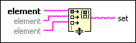
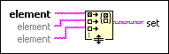

Build Set Function
Owning Palette: Set VIs and Functions
Requires: Base Development System
Creates a set from the input elements. Duplicate elements appear only once in the resulting set.

 Add to the block diagram Add to the block diagram |
 Find on the palette Find on the palette |
Owning Palette: Set VIs and Functions
Requires: Base Development System
Creates a set from the input elements. Duplicate elements appear only once in the resulting set.

| Add to the block diagram |
Find on the palette |